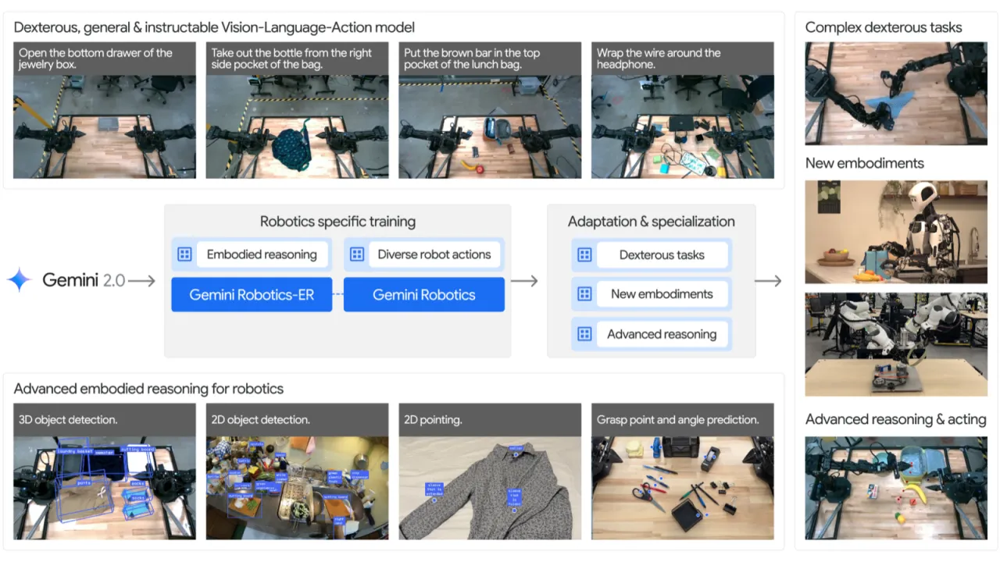
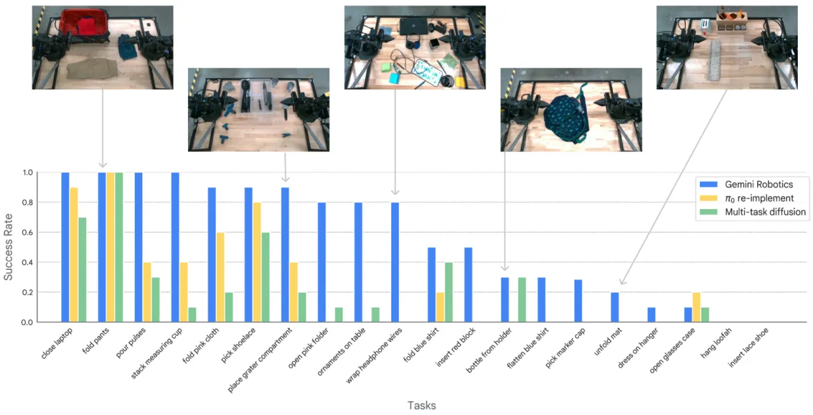
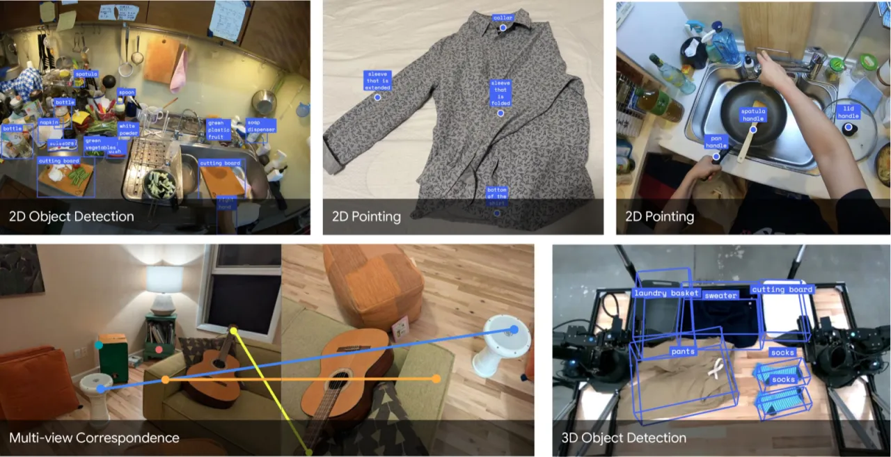
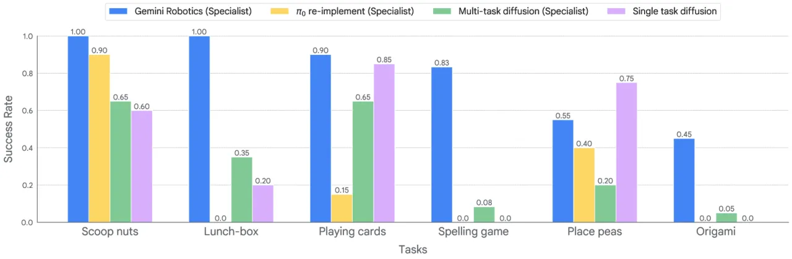
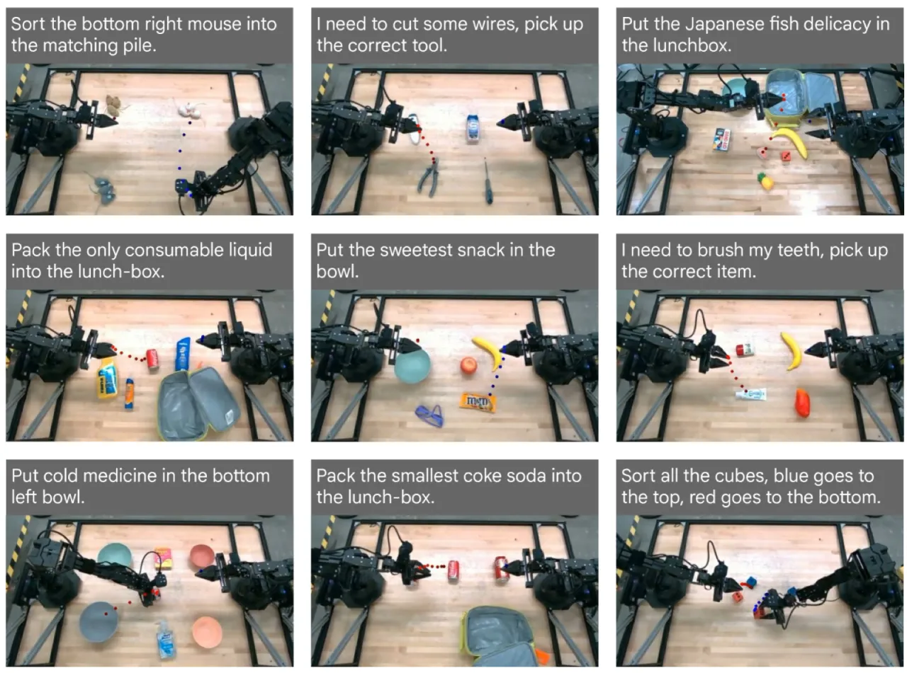

本文提出 Gemini Robotics 模型体系：以 Gemini 2.0 为基础，构建具备空间-时序推理能力的 Gemini Robotics-ER（Embodied Reasoning），并在此之上训练面向真实机器人操作的 VLA 主干网络 Gemini Robotics，支持零样本控制、快速迁移与新机体适应，端到端延迟约 250ms、控制频率 50Hz。
现有机器人基础模型普遍缺乏对物理世界的几何与时序理解，难以在多样化环境中完成灵巧操作；同时，现有 VLA 模型在零样本泛化与快速适配新机体方面存在明显瓶颈。Gemini Robotics 旨在以统一的多模态大模型为核心，将强大的语言推理能力延伸至物理世界。
"We present Gemini Robotics, an advanced Vision-Language-Action (VLA) generalist model capable of directly controlling robots to execute complex manipulation tasks while remaining robust to object variations, environmental changes, and natural language variations."

Gemini Robotics 体系由两个互补的模型构成：负责具身推理的 Gemini Robotics-ER，以及直接输出机器人动作的 VLA 模型 Gemini Robotics。两者共享 Gemini 2.0 基础，分别针对感知理解与实时控制进行训练。

Gemini Robotics-ER（Embodied Reasoning）在 Gemini 2.0 基础上，通过专项训练使模型获得对物理世界丰富几何与时序细节的理解。具体能力包括：
为评估具身推理能力，作者构建了 ERQA（Embodied Reasoning QA） benchmark：400 道多选题，涵盖 spatial reasoning、trajectory reasoning、action reasoning、state estimation、multi-view reasoning 等类别，其中 28% 包含多张图像。

Gemini Robotics 采用云端-边端协同的两段式架构。云端运行 Gemini Robotics-ER 的蒸馏版本作为 backbone，机载计算机运行轻量 action decoder，实现实时控制：
通过任务专项数据集（每个长时域任务约 2000–5000 条演示），Gemini Robotics 实现了午餐盒整理、折纸等高灵巧任务，成功率达 100%。对于 bi-arm Franka 机器人与 Apollo 人形机器人（Apptronik）等新机体，只需少量迁移数据即可适配，bi-arm Franka 平均成功率约 63%。
实验在 ALOHA 2 仿真与真实机器人上展开，对比基线包括 GPT-4o、Claude 3.5、π₀ 等；评测维度涵盖零样本控制、少样本快速适配、语言泛化与视觉泛化。
| 模型 | ERQA 准确率 | ERQA + CoT |
|---|---|---|
| Claude 3.5 | 35.5% | — |
| GPT-4o | 47.0% | — |
| Gemini 2.0 Flash | 46.3% | — |
| Gemini 2.0 Pro Experimental | 48.3% | 54.8% |
Gemini Robotics-ER 通过代码生成实现零样本机器人控制，Gemini 2.0 Flash 平均成功率 27%，Gemini Robotics-ER 平均 53%：
| 任务 | Gemini 2.0 Flash | Gemini Robotics-ER |
|---|---|---|
| Banana Lift | — | 86% |
| Banana in Bowl | — | 84% |
| Mug on Plate | — | 72% |
| Bowl on Rack | — | 60% |
| Banana Handover | — | 54% |
| Fruit Bowl | — | 16% |
| Pack Toy | — | 0% |
| 平均 | 27% | 53% |


快速适配实验（Section 4.3）表明，在 8 个任务中有 7 个使用不超过 100 条演示即达到 70% 以上成功率（等价于 15 分钟至 1 小时的数据采集），其中两个任务达到 100% 成功率。
Gemini Robotics-ER 在 3D Detection 上达到 48.3 AP@15，超越专项化模型。
论文明确指出："For tasks that require dexterous motions, the zero-shot success rate is not high"（Table 6 caption）。Gemini Robotics-ER 在真实机器人上进行折叠衣物（dress folding）等高灵巧任务时，零样本成功率显著低于简单抓取任务；Pack Toy 任务在仿真中零样本成功率为 0%。
论文指出："As a VLM, there are inherent limitations for robot control, especially for more dexterous tasks, due to the intermediate steps needed to connect the model's innate embodied reasoning capabilities to robotic actions."即便 Gemini Robotics-ER 具备较强的具身推理能力，将其与精确的关节-级别运动控制衔接仍需复杂中间步骤。
午餐盒整理等高难度长时域任务需要 2000–5000 条演示进行专项化微调，数据采集成本较高，难以快速推广到任意新任务。
香蕉递接（banana handover）任务在仿真中成功率为 54%，在真实机器人上因"calibration imperfections and other sources of noise"性能进一步下降。